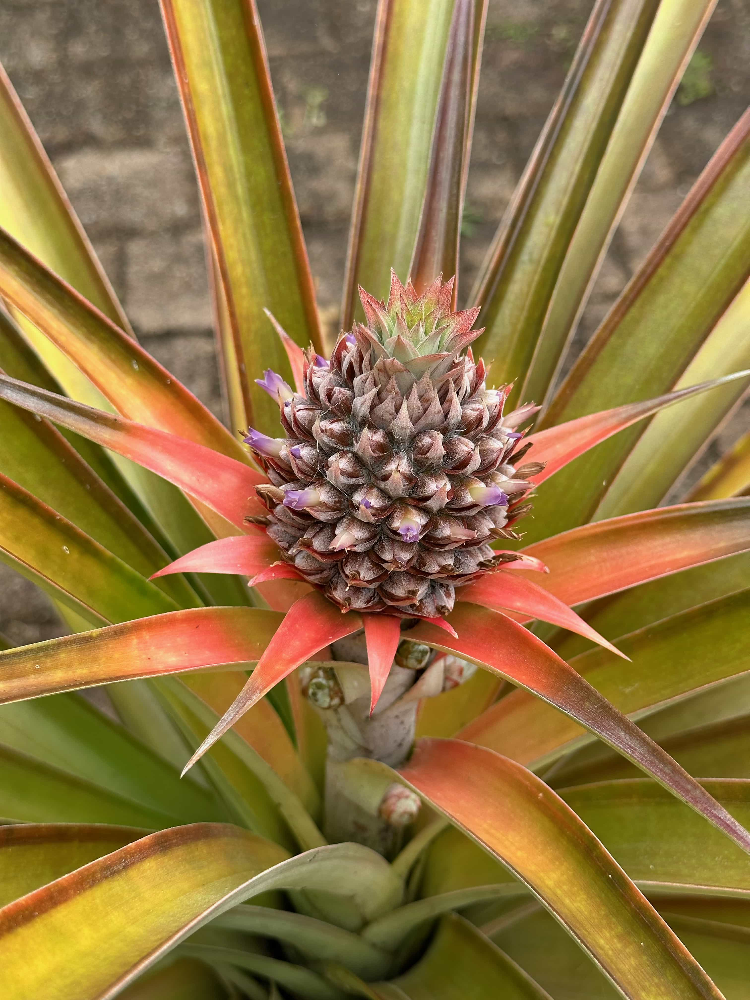

Can I Eat It Yet?
A visual guide to seasonal fruit and veg
Australia grows lots of fruits and vegetables. "Seasonality" means the times of year when harvesting a crop is at its peak. Picking food locally when it's in season usually means it'll be:
- fresh
- nutritious
- full of flavour
- cheaper
⚠︎ Seasonality varies by climate and weather conditions. A particularly dry or wet season can affect the timing and availability of certain crops. This information is a guide only.
Graphic by @DiDoesDigital
This month
Pick your favourite fruits and veggies
Foods that are out of season in
January are crossed out e.g.
Garlic
Annual seasonality
Graphic by @DiDoesDigital
Want to plant your own? Check Gardenate for what to plant this month.

About the data
Seasonality by region data:
- Australia: Frugal and Thriving
- New South Wales: Fresh Fruits & Vegetables in Spring - Sydney Markets
- Victoria: Victorian Farmers' Markets Association (VFMA): For market shoppers: What's in season
-
Queensland:
Seasonal Food Guide Australia
Expand for more details about Queensland varieties and farms…
- Fruit Tree Cottage
- Queensland Government Harvest by month and location
- Pick Your Own: Queensland
- Blueberries Australia
- Bundaberg Region Blog: Munduberra blueberry festival
- Kureen Farming Berry North
- Pure Aussie Pineapples
- Pinata Mareeba Pineapples
- Pinata Wamuran Pineapples
- Ceravolo in Glass House Mountains
- Queensland Strawberries: Ashbern Farms
- Queensland Strawberries: Bargara Berries in Bundaberg
- Queensland Strawberries: Dangleberry Farms in Bundaberg
- Queensland Strawberries: Pinata
- Queensland Strawberries: Shaylee Strawberries in Atherton
- Queensland Strawberries: SSS strawberries in Bundaberg
- SSS Strawberries
- Bundaberg Now: Strawberry season outlook
- Perfection: Suncoast Harvest in Sunshine Coast
- Queensland Strawberries: Suncoast Harvest in Sunshine Coast
- Queensland Strawberries: Tinaberries in Bundaberg
- Queensland Strawberries: Winter Strawberries in Bundaberg
- EarthMarkets: What's in Season
- Red Rich Fruits: mangoes
- Rocky Creek Orchards: Australian grown mangoes
- Manbulloo: our mango varieties
- Perfection: Calypso mangoes
- Lawn.com.au: Australian mango varieties
- ABC: The best ways to choose, store and enjoy mangoes
- Western Australia: LiveLighter In Season
- South Australia: Adelaide Farmers' Market: South Australian Seasonal Produce Guide and Adelaide Central Market: In Season - Spring
- Tasmania: Eat Well Tasmania
- Northern Territory: NT.gov.au: Growing fruit and vegetables at home
If you have data I can use from other Australian cities, let me know! seasonality@didoesdigital.com
Other seasonality info:
- Aldi Australian Fruit & Vegetables What's in season
- Coles fresh fruit and veg
- Woolworths celebrating Australian fresh: Summer, Autumn, Winter, and Spring food guides
- A Guide to the Seasonal Fruits in Australia: OffBeat Harvest
- Coastal Fresh: Seasonal Fruit & Vegetable Calendar
About the code
You can see the code on GitHub.
About the pineapple
The flowering pineapple photo is by Wesley Moore. Pineapples take up to two years to be ready to harvest!
About Di
👩💻 Front-end data viz & design systems engineer
✍️ Author of Practical UI Patterns for Design Systems
⌨️ Creator of Typey Type for Stenographers
Socials
© Diana MacDonald 2024